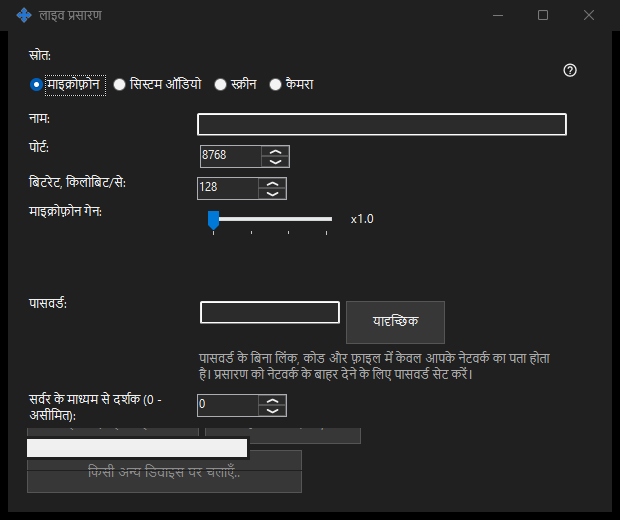

लाइव प्रसारण
यह किस लिए है
Share Manager से स्क्रीन, एक विंडो, कैमरा, माइक्रोफ़ोन या सिस्टम ऑडियो साझा करें। 64-बिट व्यूअर में लिंक, कोड या .fmsbcast फ़ाइल से लाइव प्रसारण खोलें। कैप्चर केवल शुरू करें दबाने पर शुरू होता है।


इस क्रम में
स्रोत चुनें, फिर स्क्रीन कैप्चर के लिए मॉनिटर या एक विंडो, या कैमरा और मोड चुनें। शुरू करने से पहले शीर्षक, दर्शक पासवर्ड, ऑडियो और LAN पहुँच जाँचें। दर्शकों को चुना हुआ चित्र और ध्वनि मिलती है, जिसमें दिखाई देने वाली निजी सामग्री भी शामिल है। प्रसारण शुरू होने पर लिंक कॉपी करें या .fmsbcast सहेजें। रोकें सत्र समाप्त करता है; कैप्चर की गई विंडो बंद करने से भी प्रसारण रुकता है।
तत्व
लाइव प्रसारण
स्रोत चुनें, फिर स्क्रीन कैप्चर के लिए मॉनिटर या एक विंडो, या कैमरा और मोड चुनें। शुरू करने से पहले शीर्षक, दर्शक पासवर्ड, ऑडियो और LAN पहुँच जाँचें। दर्शकों को चुना हुआ चित्र और ध्वनि मिलती है, जिसमें दिखाई देने वाली निजी सामग्री भी शामिल है। प्रसारण शुरू होने पर लिंक कॉपी करें या .fmsbcast सहेजें। रोकें सत्र समाप्त करता है; कैप्चर की गई विंडो बंद करने से भी प्रसारण रुकता है।
प्रबंधक सेटिंग · SFTP साझाकरण सेटिंग · एक्सचेंज सर्वर सेटिंग